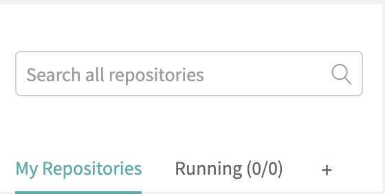

Last Updated: 29-07-2019
How to set up Travis CI
Step 1. Visit the Travis CI website and sign up
Visit this link to sign up: https://travis-ci.com (Sign up using GitHub).
Step 2. Enable the repository that you want to use for Travis CI.

Click the plus sign on the left side of the page.
Then find the repository that you want to use and enable it.
Step 3. Next create a new branch in the repository (Optional) and create a .travis.yml file.
Type the following command to create a new branch. (Optional)
$ git checkout -b "your branch name"
Then make a file within that branch.
$ vim .travis.yml
Within that file, make sure to:
- Specify Project Language
- Configure dependencies, Databases, etc.
- Execute post-build steps (such as tests)
After doing so, push the .travis.yml file to the GitHub repo (To branch or Master).
***NOTE: Travis only runs builds on the commits you push after you've added a .travis.yml file. ***
Step 4. Check the build status page to see if your build passes or fails, by visiting the Travis CI and selecting your repository.
For further information please visit https://docs.travis-ci.com/user/tutorial/